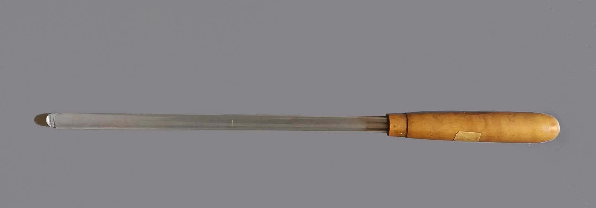

Bacchetta in vetro

Scuola di provenienza: Liceo Statale "P.E. Imbriani", Avellino
Settore: Elettromagnetismo
Costruttori: Sconosciuto
Materiali: Vetro e legno
Accessori: Nessuno
Stato di conservazione: Buono
Descrizione: Bacchetta di vetro con manico isolante di legno per caricare e scaricare elettricamente dei corpi carichi.